Official Wiki
2D turn-based strategy survival
Pixel Bulwark: Before Dawn
PIXEL BULWARK: BEFORE DAWN
Hold back the dark tide with turn-based tactics, as day and night trade places.
One castle, ten days and nights. Prepare by day, hold the line by night — until the first light of dawn arrives.
Read the rules below01
Core Loop
A run is 10 days and nights of 24 turns each. Every turn you decide who moves, what gets chopped, what gets built, and when to fall back behind the walls.
Turns & Day-Night
A day is 24 turns, one turn per hour: turn 1 is 06:00 in the morning, turn 12 is 17:00. Spend the 12 daylight turns gathering and the 12 night turns defending.
Key moments
- Turn 1 · 06:00 dawn. A new day begins with 12 turns of daylight — every unit's stamina refills at dawn.
- Turn 12 · 17:00 sunset. The day's first wave spawns at the map edges — set your archers and tower posts before dusk.
- Turn 24 · 05:00 before dawn. The survivors withdraw and your supplies are settled from the night's kills.
The Night Tide
Every night the dark host pours in from the map edges. The main wave lands at turn 12 (17:00), and two smaller harassment waves follow at turns 16 and 18.
| Day | Wave | Value |
|---|---|---|
| 1 | Main wave (turn 12) | 3 |
| 2 | Main wave (turn 12) | 5 |
| 3 | Main wave (turn 12) | 7 |
| 4 | Main wave (turn 12) | 9 |
| 5 | Main wave (turn 12) | 12 |
| 6 | Main wave (turn 12) | 15 |
| 7 | Main wave (turn 12) | 19 |
| 8 | Main wave (turn 12) | 23 |
| 9 | Main wave (turn 12) | 27 |
| 10 | Main wave (turn 12) | 31 |
| — | Harassment wave (turn 16) | ≈ 50% of the main wave, at least 1 |
| — | Harassment wave (turn 18) | ≈ 25% of the main wave, at least 1 |
New species join the rotation as the days pass: Skeleton and Gnome from day 1, Slingshot Gnome from day 2, Giant Bat from day 3, Torch Goblin from day 4, Spear Goblin and Gnoll from day 5, Hex Shaman from day 6, Minotaur from day 7. Spawn points ring the map, but a wide exclusion zone around the Town Hall keeps them away from your gate.
Dawn payout: every monster killed during the night is worth 4.5 food, 4.5 wood, 3 gold and 0.6 gems. Wildlife kills do not count.
Action & Stamina
Once stamina runs out, that unit cannot act again this turn; it refills at the start of the next one.
Rain cuts the stamina cap by 2; during a famine every unit's stamina is halved for that turn.
Four Resources
Four resources decide whether you hold the night: food keeps you alive, wood builds your walls, gold buys troops, gems buy upgrades.
Food
Won by hunting animals or netting fish. Every unit eats 1 food per turn — the more troops you field, the faster the pantry empties.
Wood
Chopped from trees. Each tree holds a limited amount of wood and is left as a stump when emptied.
Gold
Mined from gold veins. Each vein holds a limited amount of gold, and then it is empty.
Gems
Found only in chests and dropped by trolls — the only hard currency for Town Hall upgrades. Get stronger by opening chests, or by taking on trolls.
Trees come in three kinds, holding 100, 120 or 150 wood each. Gold veins come in two kinds, holding 120 or 150 gold each.
Starting stores: 60 wood, 70 food, 30 gold, plus 1 Fishing Net.
Famine
When food cannot cover your headcount you are in famine: first stamina is halved, then units bleed HP every turn. Starving a few units beats starving the whole army.
- Every unit consumes 1 food per turn.
- If food is fewer than the unit count, every unit's stamina is halved for the turn — you chop, mine and strike half as often.
- After 2 consecutive turns of shortfall, each unit loses 20% of its maximum HP every turn from then on.
Guard stance stops healing during a famine.
Blood Moon
From day 7 onward, the Blood Moon rises every day at turn 12 (17:00) and lasts until dawn. While it is up, every monster and every aggressive animal goes berserk with ×1.6 attack, and the night is stained dark red — expect the walls to be tested hard.
Weather: Rain
Each day has a chance of rain. While it rains: vision −1, guard healing halved, stamina cap −2.
| Day | 1 | 2 | 3 | 4 | 5 | 6 | 7 | 8 | 9 | 10 |
|---|---|---|---|---|---|---|---|---|---|---|
| Chance of rain | 0% | 20% | 25% | 35% | 40% | 45% | 50% | 60% | 65% | 75% |
In the rain you see only 4 tiles and heal at half rate — if it rains at night, pull your units back under the tower instead of sending them out.
Combat Damage
Damage from a single strike resolves in a fixed order: attack power → HP scaling → class multiplier → target mitigation, multiplying and subtracting in turn.
- Base attack power (including upgrade bonuses).
- Scaled by the attacker's own HP: ×1.0 at ≥75% HP, ×0.8 at ≥50%, ×0.6 at ≥25%, and only ×0.4 below that.
- Apply the unit-class counter multiplier (see the table below).
- Target mitigation: subtract ⌊defense ÷ 2⌋, and 1 more if the target is guarding.
Every distance check — range, pursuit, healing — counts all eight directions, so a diagonal step is still 1 tile. Diagonals are not safer.
Unit Counters
Attacks against a countered class hit harder.
| Type | Enemy classes | Value |
|---|---|---|
| Archer → Flying | ×1.3 | |
| Swordsman → Heavy Armor | Heavy Armor | ×1.3 |
| Lancer → Throwing | Throwing | ×1.3 |
| Every other matchup | — | ×1.0 |
Every enemy's class is marked with a badge on its card — check the badge before you pick your unit.
Guard Stance
Guard stance persists until you cancel it: it shaves a little off incoming damage and heals the unit 5 HP every turn.
Guard healing stops during a famine. Garrison Healing adds +4 HP per level (9 / 13 / 17).
Vision & Fog
Vision equals movement + 1 — 5 tiles (4 in the rain), and every building tile gives 5 tiles of vision too. Ground you have walked is revealed; ground you have not is pitch black.
Moving a unit lifts the fog — scouting and holding the night both need advance planning.
Terrain
The map is not one flat sheet. Every tile is one of these kinds, and the kind decides who may stand there — and who may shoot whom.
| Terrain | Rule |
|---|---|
| Grassland (lowland) | Walkable. The default ground: your units, farmers, wildlife and monsters all move and fight here. |
| Highland | Walkable, but a network of its own. A unit on the highland can neither attack nor be attacked from the lowland — only from another highland unit or one standing on a stair. |
| Stairs | The only bridge between lowland and highland. Everything — your units and the monsters alike — has to path through them. |
| Rocks & cliffs | Impassable. They seal off the highland plateaus. |
| Bushes | Walkable, and cover: a creature standing in a bush has a 10% chance to dodge each incoming attack. |
| Water | Impassable. Only tiles with grass on them can be entered. |
| Roofs | The Town Hall roof (3 tiles) and the Tower roof (1 tile) are elevated stations of their own. The only way on and off is the lift at the gate. |
Trees, gold veins and chests block the way as well: a farmer works from the tile next to the tree, and nothing may ever stand on a chest.
Dodging in the bushes
Every creature standing in a bush rolls a 10% chance to dodge each time it is attacked. The attack is a clean miss: no damage, no hit flash — and no counter-attack from a Lancer.
- The roll happens per attack, before damage is calculated. A unit that swings three times in one turn rolls three times.
- It applies to every creature — your units, the wildlife and the monsters. Buildings never dodge.
- Traps and starvation damage skip this check, so a starving unit still bleeds out while hiding in a bush.
- Roofs are not cover: a unit posted on a tower roof cannot dodge.
The monsters dodge too. Do not expect to bring down a bear with a single swing — and do not expect a bush to save the archer you forgot to guard.
02
Buildings
The Town Hall is your lifeline: lose it and you can never train another farmer. Everything else is raised by farmers, one build point at a time, out on the field.

Town Halltown_hall
Your main base — it trains farmers, and archers can post up on the roof.
- HP
- 200
- Defense
- 2
- Footprint
- 5 × 2
- Build Points
- 18
- Cost
- 500 100
- Produces
- Farmer ×1
- Population
- —
3 roof posts; a lift at the gate lets units walk up and down.
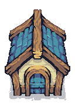
Househouse
Max Population +2
- HP
- 60
- Defense
- 0
- Footprint
- 2 × 1
- Build Points
- 6
- Cost
- 80 15
- Produces
- —
- Population
- +2
The cheapest way to add headcount — build these first when you are short on population.
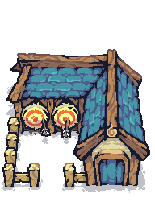
Archery Rangearchery
Produces archers.
- HP
- 70
- Defense
- 0
- Footprint
- 3 × 2
- Build Points
- 4
- Cost
- 120 20
- Produces
- Archer ×2
- Population
- +1
Prerequisite for the Tower.
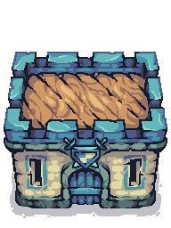
Barracksbarracks
Trains melee troops. Max Population +1
- HP
- 70
- Defense
- 0
- Footprint
- 3 × 2
- Build Points
- 6
- Cost
- 120 40
- Produces
- Lancer ×1 + Swordsman ×1
- Population
- +1
Trains both lancers and swordsmen.
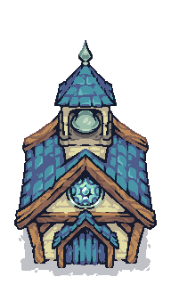
Monasterymonastery
Trains monks — melee, and they heal nearby allies. Requires population 14. Max Population +1
- HP
- 70
- Defense
- 0
- Footprint
- 3 × 2
- Build Points
- 8
- Cost
- 120 40
- Produces
- Monk ×1
- Population
- +1
- Requires
- Current population ≥ 14
Cannot be raised until the population target is met.
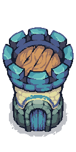
Towertower
A defensive structure — thick and tough, and archers posted on top gain extra range.
- HP
- 80
- Defense
- 2
- Footprint
- 1 × 1
- Build Points
- 6
- Cost
- 100 30
- Produces
- Archer ×2
- Population
- —
- Requires
- Requires an Archery Range
1 roof station; an archer posted up top gains extra range.
You start with a population cap of 4. Each finished building adds to it, and destroying a building gives that population back.
The Town Hall and Tower roofs are separate elevated stations. Ground units can walk on and off them. The hall holds 3, the tower 1.
There is no production queue — resources in, unit out — but a free tile is required and the population cap still applies.
03
Units
Five recruitable types with clearly separated jobs — gathering, ranged damage, two flavours of melee, and battlefield support.
Farmerfarmer
Your worker: gathers resources and raises buildings, all by himself.
- HP
- 30
- Defense
- 1
- Attack
- 4
- Range
- 1
- Move
- 4
- Stamina
- 12
- Recruit Cost
- 50
Chop +5 wood per swing (4 stamina) · Mine +2 gold per swing (4 stamina) · Build +1 build point (4 stamina)
Archerarcher
Your ranged damage dealer — 2 tiles of reach, and safest from behind the line.
- HP
- 50
- Defense
- 2
- Attack
- 10
- Range
- 2
- Move
- 4
- Stamina
- 12
- Recruit Cost
- 30 15 50
Range 2 tiles; ×1.3 damage against the Flying class.
Lancerlancer
Melee infantry with high attack — and it strikes back when hit.
- HP
- 60
- Defense
- 2
- Attack
- 12
- Range
- 1
- Move
- 4
- Stamina
- 12
- Recruit Cost
- 15 20 50
Passive counter: automatically strikes back when attacked (40% of attack power); ×1.3 damage against the Throwing class.
Swordsmanwarrior
The melee workhorse — the highest attack and the highest defense of any unit.
- HP
- 65
- Defense
- 4
- Attack
- 13
- Range
- 1
- Move
- 4
- Stamina
- 12
- Recruit Cost
- 30 20 60
Highest single-hit damage and the highest defense; ×1.3 damage against the Heavy Armor class.
Monkmonk
A melee monk that also heals allies — worth more than a healing item when the front line takes hits.
- HP
- 40
- Defense
- 1
- Attack
- 4
- Range
- 1
- Move
- 4
- Stamina
- 12
- Recruit Cost
- 40 30 60
Heals 16 HP within 3 tiles (6 stamina).
An attack costs 5 stamina. As long as stamina holds, a unit may attack several times in one turn.
Farmers run on auto-loop by default: chopping, mining and building repeat until you stop them — right-click the farmer or use the bottom-right panel.
The melee bonus from "Sacred Blood" applies only to melee units (lancer, swordsman, monk); archers are unaffected.
04
Monsters
The dark host pours in from the map edges at night. They fall into four classes, and your roster happens to counter each of them.
Skeletonskull
Normal
The most common nocturnal visitor — numerous, but easy to handle one on one.
- HP
- 42
- Defense
- 2
- Attack
- 7
- Range
- 1
- Pursuit Range
- 6
- Kill Reward
- 5 gold
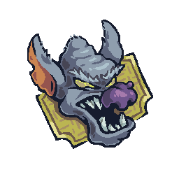
Giant Batgiant_bat
A fast, fragile harasser with the widest vision and pursuit range.
- HP
- 48
- Defense
- 2
- Attack
- 8
- Range
- 1
- Pursuit Range
- 8
- Kill Reward
- 5 gold
Lifesteal: recovers 50% of the damage it deals
+4 damage against player units
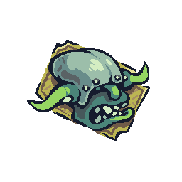
Spear Goblinspear_goblin
Heavy Armor
A sturdy mid-tier melee unit: slow on its feet, but it hurts.
- HP
- 60
- Defense
- 6
- Attack
- 12
- Range
- 1
- Pursuit Range
- 5
- Kill Reward
- 8 gold
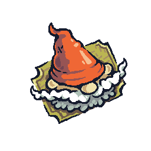
Gnomegnome
Normal
A middling melee unit whose tempo sits between skeleton and giant bat.
- HP
- 45
- Defense
- 4
- Attack
- 7
- Range
- 1
- Pursuit Range
- 6
- Kill Reward
- 5 gold
+4 damage against buildings
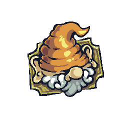
Slingshot Gnomeslingshot_gnome
Throwing
The first ranged enemy — it halts three tiles out and lobs acorns.
- HP
- 45
- Defense
- 2
- Attack
- 5
- Range
- 3
- Pursuit Range
- 7
- Kill Reward
- 5 gold
Gnollgnoll
Throwing
The second ranged enemy, throwing from two tiles with respectable health and damage.
- HP
- 62
- Defense
- 4
- Attack
- 12
- Range
- 2
- Pursuit Range
- 6
- Kill Reward
- 6 gold
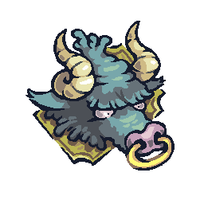
Minotaurminotaur
Heavy Armor
An elite melee brute with the highest health, defense and structure damage.
- HP
- 80
- Defense
- 6
- Attack
- 12
- Range
- 1
- Pursuit Range
- 6
- Kill Reward
- 12 gold
+8 damage against buildings
Hex Shamanhex_shaman
Throwing
A ranged caster whose hex bolts detonate on impact.
- HP
- 55
- Defense
- 3
- Attack
- 6
- Range
- 3
- Pursuit Range
- 7
- Kill Reward
- 8 gold
Ranged throw — the hex bolt detonates on landing
+8 damage against player units
Torch Goblintorch_goblin
Normal
A melee unit whose torch is unusually effective against buildings.
- HP
- 55
- Defense
- 4
- Attack
- 8
- Range
- 1
- Pursuit Range
- 6
- Kill Reward
- 6 gold
+6 damage against buildings
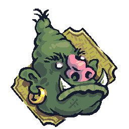
Trolltroll
Heavy Armor
The guardian disturbed by exploring ruins — thick, heavily armored, and lethal in one swing.
- HP
- 65
- Defense
- 8
- Attack
- 16
- Range
- 1
- Pursuit Range
- 6
A random item (Snare / Warsong Horn / Recall Scroll) plus ground resources (30–50 food, 30–50 wood, 10–20 gold, 5–8 gems) that must be walked over to collect
Released only by exploring ruins; never part of the nightly random spawn, and it does not withdraw at dawn
05
Wildlife
The main source of food — and sometimes a problem with teeth. The map restocks with new animals every day.
Sheepsheep
A docile herd that converts straight into food when hunted.
- HP
- 10
- Defense
- 0
- Kill Reward
- 15 food
Never attacks on its own
Pigpig
Tougher than a sheep, and worth more meat.
- HP
- 15
- Defense
- 0
- Kill Reward
- 20 food
Never attacks on its own
Bearbear
A dangerous forest keeper that charges anything entering its sight.
- HP
- 40
- Defense
- 5
- Attack
- 12
- Pursuit Range
- 5
- Kill Reward
- 30 food (60%) / 6 gold (40%)
Attacks proactively and pursues anything in sight
Lizardlizard
It only gives chase once provoked — and once provoked, it does not stop.
- HP
- 30
- Defense
- 3
- Attack
- 8
- Pursuit Range
- 5
- Kill Reward
- 15 food (60%) / 4 gold (40%)
Must be provoked first, then pursues relentlessly
Snakesnake
A slender ambusher with a quick strike, and a knack for dropping gold.
- HP
- 20
- Defense
- 2
- Attack
- 8
- Pursuit Range
- 5
- Kill Reward
- 10 food (20%) / 6 gold (80%)
Attacks proactively and pursues anything in sight
Spiderspider
A large eight-legged predator — and oddly, it drops wood.
- HP
- 20
- Defense
- 1
- Attack
- 6
- Pursuit Range
- 5
- Kill Reward
- 10 wood (20%) / 6 gold (80%)
Attacks proactively and pursues anything in sight
Bears, snakes and giant spiders attack humans within their sight. The lizard only retaliates once it has been hit.
The map restocks twice a day, at turns 1 and 8. The daily cap starts at 12 animals on day 1 and climbs: 13 on day 2, 15 on day 3, 17 on day 4, 19 on day 5, 22 on day 6, 25 on day 7, then +4 a day. The mix is roughly half sheep, three eighths pigs and one eighth lizards.
06
Items
Powerful one-shot support recovered from chests, trolls and the Mystery Merchant. Supplies are limited; spend them well.
Snaresnare
Immobilizes nearby enemies (1 tile) for 2 turns.
Place on an empty tile; enemies passing through are held for 2 turns.
Warsong Hornwarsong
Boosts attack power of all allies for 3 turns.
All allied units deal ×1.5 attack for 3 turns.
Recall Scrollscroll
Instantly teleports the selected ally back to the castle.
The selected unit returns to the Town Hall immediately.
Fishing Netfishnet
Place on fish tiles to gain food every turn.
Placed on a school of fish: +4 food per turn for 24 turns, then it vanishes. You start with one.
Mystery Merchant
Appears once each on days 3, 6 and 9; disappears the moment his stock sells out, and leaves at day's end — buy early.
| Stock | Price | Qty |
|---|---|---|
| Snare | 10 25 | 3 |
| Warsong Horn | 15 2 | 2 |
| Recall Scroll | 10 20 | 2 |
| Fishing Net | 10 50 | 4 |
07
Town Hall Upgrades
Spend gems at the Town Hall for permanent power. Each upgrade caps at level 3, and every level costs the same.
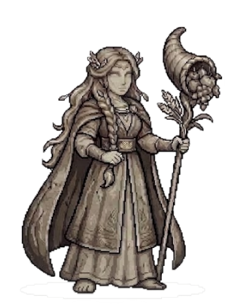
Demeter
Goddess of harvest and gathering; her blessings improve how much you can extract from the land.
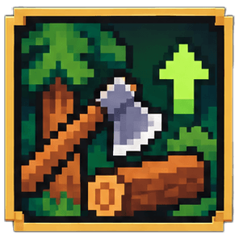
Timber Refining
Farmers chop faster
Per level: +2 wood per farmer chop.
Garrison Healing
Guard and monk healing both get stronger
Per level: +4 to guard recovery and +4 to monk healing.
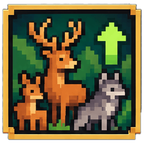
Fauna Growth
More animals, bigger trees, richer nets
Per level: +2 animals per day, +20 wood per tree, +1 food per turn per net.
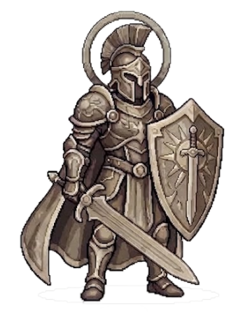
Mars
God of war and holy light; his blessings toughen your troops and sharpen their strikes.
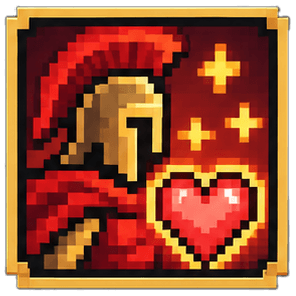
Sacred Blood
More HP for everyone, more punch for melee
Per level: +2 max HP for everyone, +2 attack for melee units.
Divine Protection
Everyone gets tougher
Per level: +2 defense for every ally.
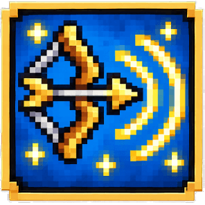
Piercing Arrow
Lv1 adds range, Lv2–3 adds attack
Level 1: +1 archer range. Levels 2–3: +2 archer attack per level.
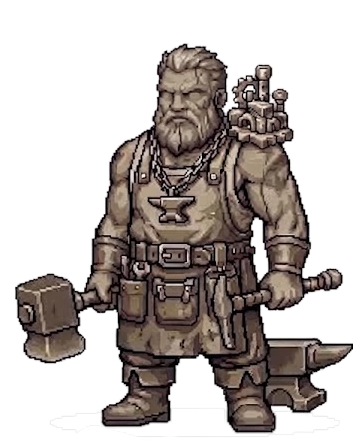
Hephaestus
God of the forge and the mason; his blessings improve how fast and how hard your defences hold.
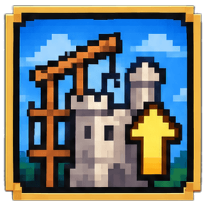
Divine Masonry
Every building gains hit points
Per level: +10 max HP for every building — and buying it tops every building up to full.
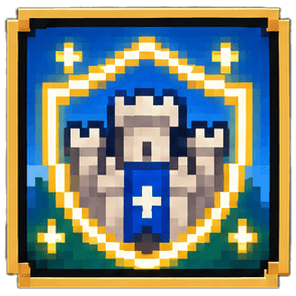
Fortified Walls
Every building gains defense
Per level: +2 defense for every building you own.
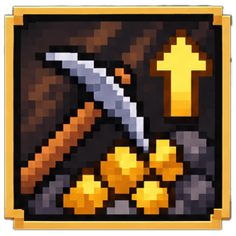
Mining Refining
Farmers mine more gold
Per level: +1 gold per farmer mining action.
Each upgrade caps at level 3, every level costs the same, and the effect applies immediately on purchase. Gems come only from chests and trolls — which is why opening one and pushing deeper are always worth the risk.
08
Growth Quests
Four quests run in parallel. Complete them all to advance a round, where both the goals and the rewards scale up.
Hunting
Hunt 10 animals
Reward: 50 food
Woodcutting
Gather 100 wood
Reward: 50 wood
Mining
Mine 50 gold
Reward: 25 gold
Population
Reach population of 6
Reward: 30 food, 30 wood, 10 gold
Four quests run in parallel. Completing all of them advances a round: goals double (the population goal climbs 6 → 10 → 16 → 24 → 34 …) while rewards scale with the round, indefinitely. Monsters killed at night do not count toward the hunting quest.
09
More Systems
Places scattered across the map, the daily supplies, and how this siege is actually won.
Dawn Choice
From day 2 onward, every dawn brings a two-option dilemma. One of five events is drawn at random, and the last two days' events are excluded — so you never see the same one three days running. The effect lasts until the next dawn.
| Event | Option A | Option B |
|---|---|---|
| Edge of Blades | Song of the Sky: archers ×1.2, melee ×0.8 | Close Quarters: melee ×1.2, archers ×0.8 |
| Weathershift | Clear the Skies: no rain at all, fishing ×0.5 | Endless Rain: rain all day, fishing ×1.5 |
| The Balance of War | Cast Off the Shield: defense ×0.75, attack ×1.1 | Fortify Deep: defense ×1.25, attack ×0.9 |
| Tillage and Treasure | All Hands to Lumber: wood ×1.5, no mining today | Pan for Gold: gold ×1.5, wood ×0.5 |
| Ration Edict | Feast and Plenty: stamina cap +4, 2 food per unit per turn | Rationing: no food upkeep, stamina cap −4 |
Farmers are neither archers nor melee, so Edge of Blades leaves them untouched.
Windmill
Appears on the map from day 5. While one of your units stands within a tile, it produces 5–10 food, 4–6 wood or 2–4 gold at random each turn. Walk away and the sails stop.
Chests
Six chests appear on days 1, 4, 7 and 10. Opening one costs 3 stamina and may yield 50–100 of a resource, 5–10 gems, or an item. Opened chests vanish the next day; unopened ones stay put.
Fish & Nets
Nets can be placed on schools of fish for +4 food per turn, lasting 24 turns before they rot away. Enemies cannot destroy them.
Teleport Stones
Stand on a teleport stone to be whisked back to the Town Hall. The teleport is one-way — easy to return, impossible to leave.
Exploring Ruins
Caves and dead trees scattered across the map can be explored for resources and items — but something deep inside stirs a troll. Each site needs 2 days to cool down before it can be explored again.
Controls
Left-click to select a unit, right-click to move, attack, gather or build. Farmers on auto-loop repeat their current action until you right-click the farmer to interrupt them.
Starting Out
You begin with 60 wood, 70 food and 30 gold, plus one Fishing Net, a population cap of 4, and a starting force of 2 archers and 1 farmer.
Victory
The goal of this siege is to hold out for 10 days and nights and welcome the first light of dawn.
Defeat
Defeat: the game ends when every building and every unit you have is gone — if the Town Hall falls and you have nothing left to fight with, it is over. Lose the hall and you can never train another farmer, so guard it first.